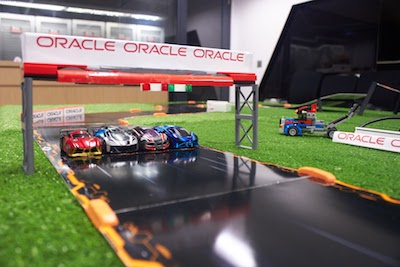

Data in Action - Active
Raspberry Pi sniffing bluetooth data from the racing cars and streamed into IoT
Events such as car crash have a real time response workflow that will send in emergency services and launch the drone
Streaming speed and lap data rendered into a telemtry dashboard during the race
Post race analysis in data visualisation
Data in Action - Reactive
Incident Response
Realtime dashboards and visualisations
Incident alerting & Notification
Emergency Response Evaluation
Rescue Despatch
Incident Case Logging
Data in Action - Proactive
What If and Deterministic Evaluation
Planning and Simulation
Predictive Analytics
Vehicle Data Analysis

Data in Action - Active Data

The Anki Overdrive racing car game uses mobile devices to race the cars around the track. The game is played out like a video game with power ups, weapons and some chaotic driving! The cars are controlled by bluetooth and there is constant two way communication between the cars and the mobile devices.
We use bluetooth sniffers connected to a Raspberry Pi to eavesdrop on the bluetooth conversations. Some simple coding forwards the data into Oracle's Internet of Things (IoT) Cloud Service.

Near realtime dashboards rendered in Oracle Database Cloud Service using Application Express and rendered using Oracle Jet.
Data in Action - Reactive
On track events are monitored by IOT Cloud Service. For a given event, a process can be initiated, thus invoking some reaction.
In our case, a process (in Process Cloud) is kicked off. This determines an appropriate course of action. That might be through notification, or just a visual check of the symptons. For Anki, an "off track" event (i.e. a car crash), causes either an Ambulance or an Emergency drone to be deployed.
We can also send requests to service cloud. If the incident is only minor, service cloud can deploy a tow-truck and schedule "maintenance" services.